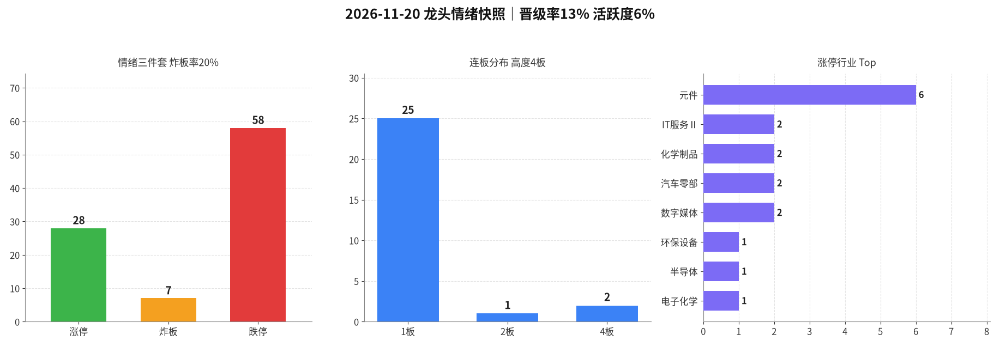

交易日 2026-11-20（周五） · 目标交易日 2026-11-23（周一） · 退潮未出·广度近冰点
情绪：退潮 涨停 28 · 跌停 58 炸板率 20.0% · 晋级率 13.0% · 高度 4板| 票 | 昨动作 | 今收盘涨跌幅 | 判定 |
|---|---|---|---|
| 全市场 | 空仓观望 | 中证1000 −4.89%，红盘约5.2%，跌停68→58仍高，晋级12.5%→13.0% | 对 |
| 算力PCB | 只观察/不加 | 沪电−0.96%、深南−0.59%、景旺−1.10%；海光−8.75%、浪潮−8.06%；中京电子晋级2板（+10.02%，炸0，额9.90亿）但中军未同步 | 对 |
| 家电/九阳 | 不加 | 九阳低开−8.20%收−7.21%（额42.92亿）；小熊/爱仕达2连跌；海立−8.36%、长虹美菱−9.05% | 对 |
| 高度/反复 | 不加 | 全筑3板直接跌停（开板12）；盛剑炸4回封4板额仅6.73亿、真视通4板额仅4.89亿；华东重机低开跌停收−3.52%；广百3连跌、天普一字2连跌 | 对 |
| 跌停 | 不抄 | 跌停仍58（2连跌23、3连跌3）；昨68家跌停未见干净反包 | 对 |
一句话：五条全对——空仓躲开中证1000近5%的杀跌；中京虽然干净晋级，但中军没跟上、大盘在砸，不能事后改判该开仓。
改进（未回测）：退潮里即使出现干净2板+元件散首板，只要跌停仍远高于个位数、红盘极低、中军不同步，次日仍不把该2板升级为开仓。
未出——广度更差、接近冰点，结构尚未逆转。
涨停 28（周四23略增），跌停东财池 58（周四68略收，但仍远高于个位数；其中3连跌3家、2连跌23家），晋级率 13.0%（3/23，与12.5%几乎持平，质量参差），炸板率 20.0%（7/35，周四51.1%↓明显回落），红盘约 5.2%（东财涨跌分布：上涨282 / 下跌5083 / 平盘15；较周四约12.2%再降，广度接近冰点）。指数杀跌（上证 −1.22%、创业板 −3.54%、科创50 −3.12%，中证1000 −4.89%），两市放量约1171亿至约14222亿——是下跌放量，不是回流。涨停池成交额约200亿，跌停池约318亿，跌停额继续压过涨停额。连板高度回到 4板（盛剑脏回封、真视通小额），另有中京电子干净2板，但都撑不起修复。定性是 退潮未出：不是修复（红盘更差、晋级仍弱、中军未同步），也先不标成冰点（跌停在收窄、炸板率明显回落、还有局部干净板）。默认继续空仓，元件/PCB只观察不加，不追小额4板，不抄跌停。
今日为退潮，但跌停在收窄、炸板率明显回落，不满足「跌停扩散 / 炸板率飙升 / 主线资金撤出」的加推条件，不写情绪→路线2风险过滤句。
| 指标 | 数值 | 备注 |
|---|---|---|
| 涨停家数 | 28 | 已剔 ST / 北交所；东财涨停池 raw28=clean28 |
| 跌停家数 | 58 | 东财跌停池 raw58=clean58（无需再剔）；较周四68略收，仍高。3连跌3家（广百、凯撒文化、阳光照明），2连跌23家（含小熊、爱仕达、泰嘉、天普一字等） |
| 炸板家数 | 7 | 炸板池 clean7（raw7=clean7） |
| 炸板率 | 20.0% | 炸板/(涨停+炸板)=7/35；较周四51.1%明显回落 |
| 连板高度 | 4板 | 盛剑科技（环保设备，一字开后炸4、14:07回封，额6.73亿）、真视通（IT服务Ⅱ，09:30封、炸0，额4.89亿）——小额/偏脏，不当空间龙。全筑股份3板今日直接跌停 |
| 连板结构 | 4板 2 / 2板 1 / 1板 25 | 2板只有中京电子（元件，09:36封、炸0，额9.90亿），相对干净 |
| 昨日涨停数 | 23 | 晋级分母用周四官方清洁池23。东财 previous 池 raw23=clean23，与之一致 |
| 晋级数 / 晋级率 | 3 / 13.0% | 口径：周四清洁池∩今日涨停池（3/23）。晋级=盛剑、真视通、中京电子。另有3家直接跌停（全筑、康盛、原尚），其余17家回落 |
| 高度/主线样本 | — | 高度回到4板但质量差；元件出现干净2板+多只散首板，中军未同步；家电/九阳继续走坏。局部结构改善，整体仍是退潮 |
| 两市成交额 | 约 14222亿 | 新浪：上证≈7025.74 + 深成≈7196.27（周四约13051↑，放量约1171；下跌放量） |
| 涨停池成交额合计 | 约 200亿 | 仅涨停标的（周四约178略增；最大额冰山冷热30.62亿属尾盘脏回封）；跌停池约318亿，跌停额继续反超 |
| 红盘占比 | 约 5.2% | 东财涨跌分布已更新（qdate=20261120）：上涨282 / 下跌5083 / 平盘15（282/5380=5.24%）。乐咕已更新（2026-11-20 15:00）：上涨297 / 下跌4897 / 平盘22（297/5216=5.69%），活跃度5.69%；乐咕涨停30/真实28、跌停68/真实57，与东财池28/58口径不完全一致，已注明 |

附图：涨停 / 炸板 / 跌停 + 连板分布 + 行业集中。
读表一句话：炸板率回落、跌停略收、高度回到4板，但红盘掉到约5%、中证1000跌近5%、晋级仍只有13% = 广度更差，还不是修复。周一默认空仓。
钱没有从跌停池回到涨停池：跌停额约318亿仍压过涨停额约200亿。红盘从约12%掉到约5%，中证1000、创业板、科创50一起杀，是典型的退潮日亏钱效应，不是切换日。结构上唯一能看的，是元件/PCB出现了一只干净2板和几只相对干净的散首板；但沪电/深南/景旺等中军没有同步封板，不能升级为主线。
中京电子（元件）竞价高开 +2.55%，09:36封、炸 0，收 +10.02%，额 9.90亿，统计2/2——相对干净的2板，是今日质量最好的晋级。但它昨天就是「孤立首板」，今天中军仍然没有跟上。同方向散首板：超声电子低开 −3.21%、10:00封、炸0，额 21.35亿（今日涨停池第二大额，相对干净的弱转强）；光华科技（电子化学）09:36封、炸0，额7.52亿；澳弘电子10:04封、炸0，额5.11亿；满坤科技（20cm）11:20才封、炸0，额8.52亿，偏午后。骏亚科技炸1、额仅3.93亿；东晶电子额仅0.38亿，忽略。
中军没有同步：沪电收 −0.96%（额64.84亿，低开−2.95%后仅翻平附近）、深南 −0.59%、景旺 −1.10%，都未封；胜宏 −4.20%、剑桥 −8.67%、生益电子 −3.83%、天孚 −6.84%。核心偏弱的仍是海光 −8.75%、浪潮 −8.06%；旭创 −3.72%、新易盛 −1.23%。沾边但不干净：华微电子（半导体）炸 4、14:49才回封，额12.29亿——尾盘脏回封，不并入观察的「干净簇」。
定位：观察继续，默认不加。周一不追中京电子/超声电子高开或回封，不把满坤午后20cm或华微脏回封当成开仓理由。
盛剑科技：竞价一字+10.00%，盘中最低24.28（约−3.6%），炸 4，14:07才回封，额仅 6.73亿——脏4板，题材是环保设备，不加。真视通：竞价+1.04%，09:30封、炸0，但额仅 4.89亿，IT服务孤立高度，不加。同高度组已经撕裂：全筑股份（昨3板）今日开板12次收跌停。这就是不追小额高度的原因。旧高度残毒：华东重机竞价低开跌停（−10.04%）后反抽仍收 −3.52%（额28.57亿），不接飞刀；北纬科技炸3收+8.17%（额22.89亿、换手52%），统计8/5，反复票，不加；华胜天成低开−5.03%收+3.71%（额53.70亿）是放量震荡，不是晋级；卡莱特收−8.11%；广百3连跌、天普一字2连跌、国统低开跌停后收−9.64%未封死。
九阳股份竞价低开 −8.20%，最低28.09，收 −7.21%，额42.92亿——昨天那笔低开跌停、炸13才回封的脏反包，今天没有延续。同簇更差：小熊电器、爱仕达均收2连跌；海立 −8.36%、长虹美菱 −9.05%、北鼎 −8.51%、华帝 −6.80%。康盛股份（家电零部，昨首板）今日开板18次收跌停。
定位：簇已散。周一不接力九阳/海立，不抄小熊/爱仕达。
冰山冷热（通用设备）额 30.62亿（涨停池第一大额），低开−4.12%，炸 2，14:40才回封，换手43%——大额尾盘脏首板，不加。大东方炸3、14:49回封，统计14/7，额11.44亿，反复票，不加。凡拓数创（数字媒体，20cm）炸3、13:04回封，额14.90亿，质量一般，带不动风语筑那条辅线。跌停仍有58家：3连跌3家（广百、凯撒文化、阳光照明），2连跌23家。文投低开跌停后收+0.37%、日出东方从4连跌反抽+1.86%，都属于个股挣扎，不是跌停池反包。不抄。
钱在撤离，只在元件角落留了一点相对干净的板。没有形成可执行的主线：中军未封、高度质量差、家电继续证伪。周一不能把中京电子2板或超声电子首板升级为主仓或试错仓，除非盘中同时满足更严的修复条件（见指令1）。
情绪 = 退潮未出（广度近冰点） → 专项总仓建议 0%（默认空仓，未回测）；同时持仓建议 0 只；不追中京电子/超声电子高开，不接力盛剑/真视通小额4板，不抄跌停，不接力九阳。
| 代码+名称 | —（不点名追昨涨停） |
|---|---|
| 动作 | 空仓观望（默认） |
| 进场 | 无。周一竞价若昨涨停大量低开＞5%，或跌停重新走扩、指数快速跳水 → 全天不交易。 |
| 仓位 | 0%（未回测） |
| 原因 | 红盘约5.2%，中证1000 −4.89%，晋级仅13.0%，跌停仍有58家，跌停额继续压过涨停额。炸板率回落和局部干净板，还不够叫修复。 |
| 作废 | 仅当盘中同时出现「跌停收窄到个位数、炸板率维持低位、出现早盘干净集中首板且中军同步」才允许把观察线升级为极轻试错（否则维持空仓，未回测）。 |
| 代码+名称 | 002579 中京电子、000823 超声电子、002741 光华科技、605058 澳弘电子、301132 满坤科技；002463 沪电股份、002916 深南电路、603228 景旺电子只记中军观察；华微电子/骏亚科技/东晶电子不纳入开仓候选 |
|---|---|
| 动作 | 只观察 / 默认不加 |
| 进场 | 无开仓。即使竞价高开或回封，也不追板、不打前排（尤其中京电子/超声电子高开＞3%或一字直接放弃）。记录竞价强弱、封板与沪电/深南/景旺是否同步。 |
| 仓位 | 0%（未回测） |
| 原因 | 中京是相对干净的2板，超声是大额弱转强首板，但中军未封、大盘在砸，仍是孤立簇。满坤是午后20cm，华微是尾盘脏回封，更不能当信号。 |
| 作废 | —（升级条件见指令1，未回测） |
| 代码+名称 | 603324 盛剑科技、002771 真视通；603030 全筑股份；002685 华东重机；002148 北纬科技；600410 华胜天成；301391 卡莱特；002187 广百股份、002205 国统股份、605255 天普股份 |
|---|---|
| 动作 | 不加（不追盛剑/真视通，不接全筑死叉后的反抽，不接华东重机/北纬飞刀） |
| 仓位 | 0% |
| 原因 | 两只4板额都不足7亿，盛剑还是炸4的脏回封；同组全筑直接跌停。关注点：若盛剑/真视通竞价打开后直线砸 → 强化全天空仓。 |
| 代码+名称 | 002242 九阳股份、600619 海立股份、000521 长虹美菱、002959 小熊电器、002403 爱仕达、300824 北鼎股份、002035 华帝股份、002418 康盛股份 |
|---|---|
| 动作 | 不加（不接力九阳/海立，不抄小熊/爱仕达，不接长虹美菱/北鼎/华帝反抽） |
| 仓位 | 0% |
| 原因 | 九阳脏反包失败；小熊/爱仕达2连跌，簇继续走坏。 |
| 代码+名称 | 002187 广百股份、002425 凯撒文化、600261 阳光照明、605255 天普股份、002959 小熊电器、002403 爱仕达、002843 泰嘉股份，以及今日其余跌停票；000530 冰山冷热、600327 大东方、301313 凡拓数创 |
|---|---|
| 动作 | 不加 / 不抄底（冰山冷热/大东方/凡拓数创也不追高开或回封） |
| 仓位 | 0% |
| 原因 | 跌停仍有58家，3连跌3家、2连跌23家；冰山冷热是14:40才回封的大额脏首板，不能当新主线。 |